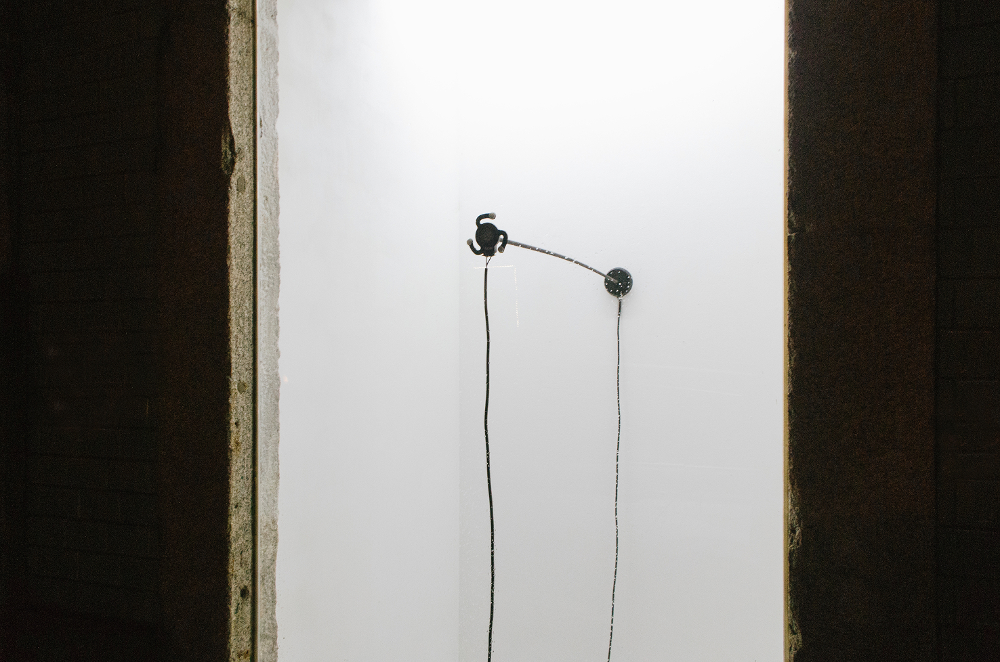
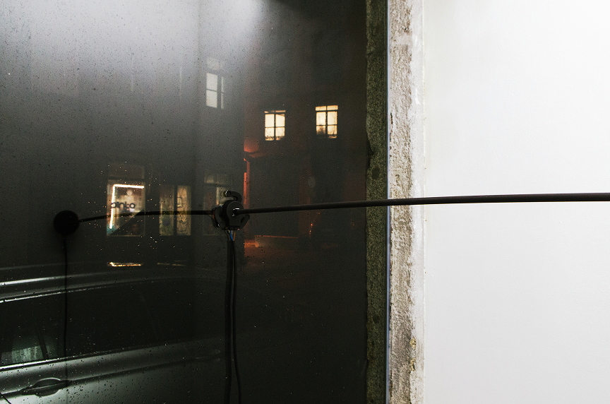
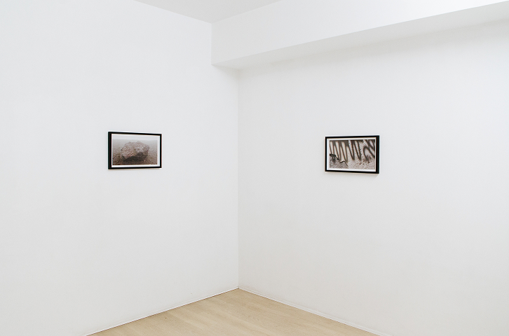
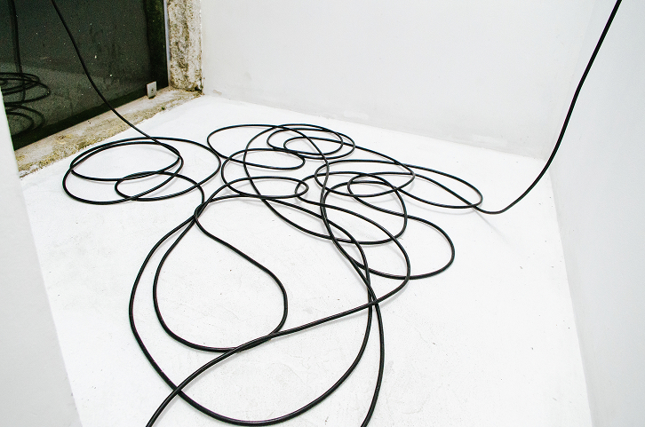
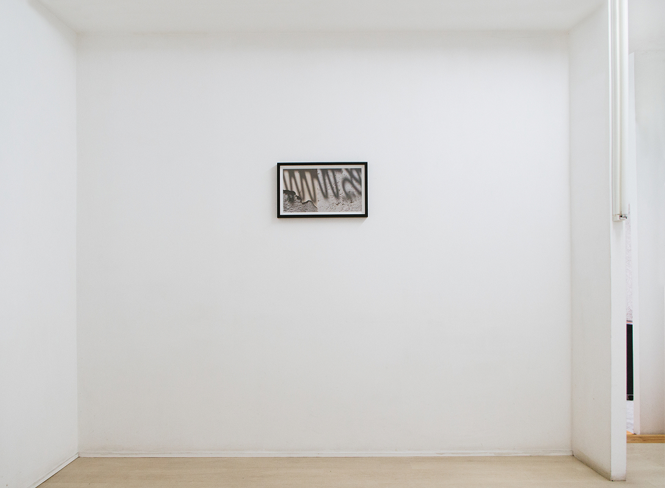
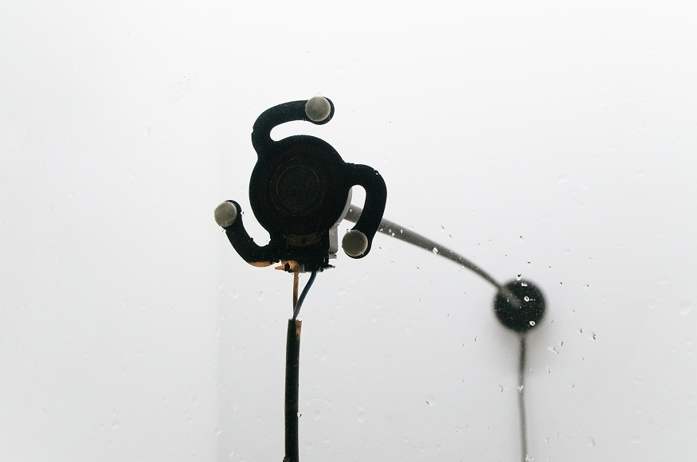
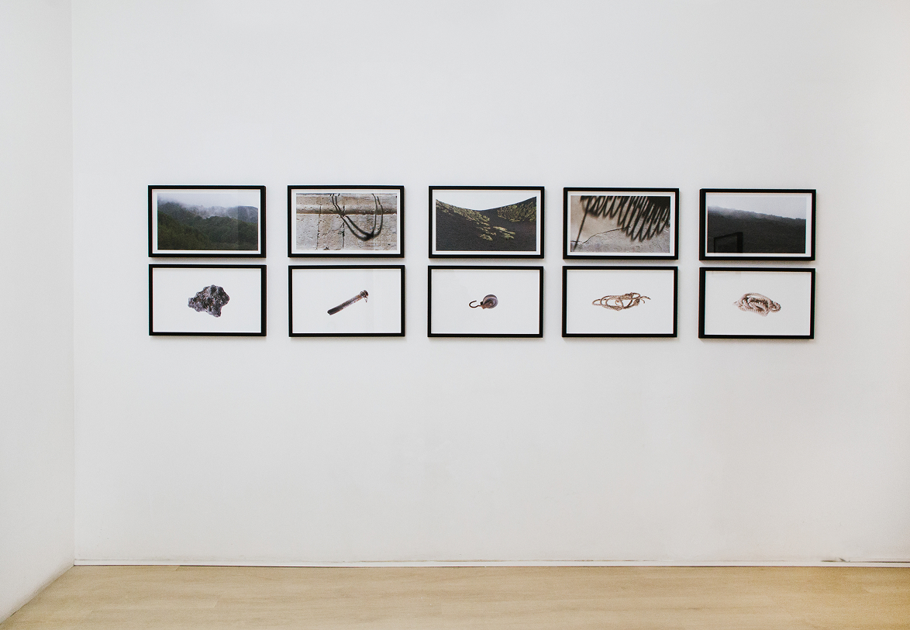

In analogy to the romanticism adventurous that organized the Grand Tour, in which there were collected the engraving albums as a reflex of their urge for knowledge and taste for the classic, Pedro Tudela collected objects from different origins during his artistic residency in Spring 2019 in Sicily. The works presented at the GT_S exhibition at Ex Convento del Ritiro in Siracusa, had those objects as starting point – an iron rod, a volcanic rock and a pair of ropes.
For KUBIKGALLERY’s show in Porto, a few images made by Pedro Tudela during his residency are going to be presented and will reveal some aspects of his investigation and route throughout the island. Earthy images of Etna, the Ortígia experiences, in which are apparent the different civilizations that occupied this harbour, the lunar soil that surrounds the lighthouse at Capo Murro di Porco, a place that was first sighted by refugees that cross the Mediterranean Sea. Therefore, this exhibition is understood as a support of GT_S in which it will also be presented a sound piece, composed by sound recordings that were made in an artificial cave called Orecchio di Dionisio. This cave was named by Caravaggio when he visited it in the first decade of the 17th Century.






KUBIKGALLERY, Porto
20.12.2019 – 1.2.2020
KUBIKGALLERY
Città di Siracusa, MADE Program – Accademia di Belle Arti Rosario Gagliardi, KUBIKGALLERY, Fundação Calouste Gulbenkian, República Portuguesa – Cultura / Direção-Geral das Artes, Câmara Municipal do Porto
Luís Pinto Nunes,
Luís Albuquerque Pinho
Rita Castro
Pedro Tudela
João Azinheiro,
Mafalda Rangel,
Marta Rodrigues,
Rita Castro,
Rosi Avelar.